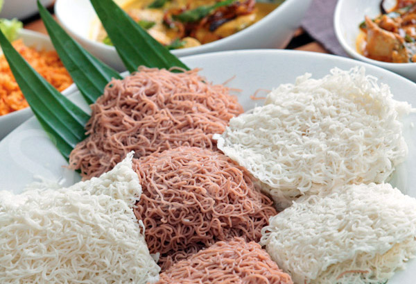
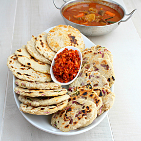
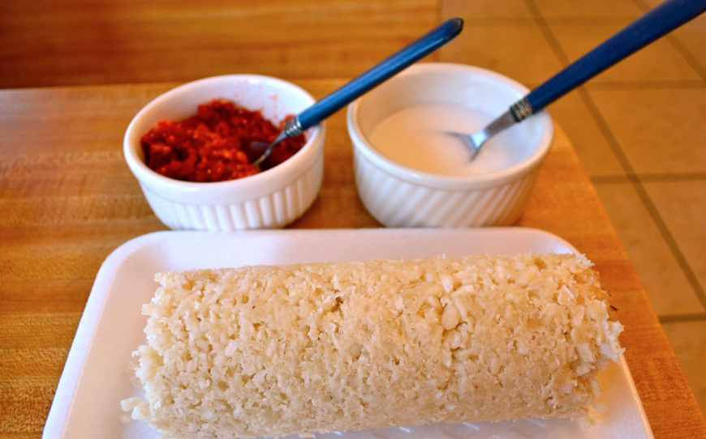
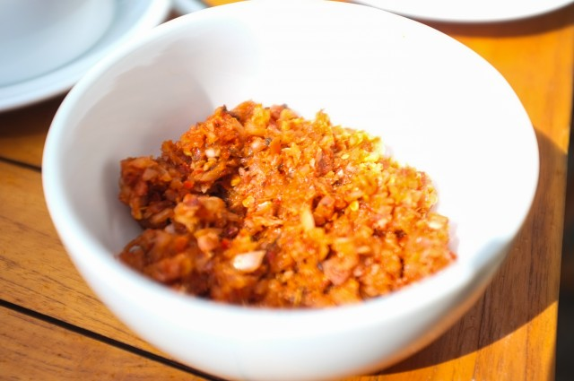
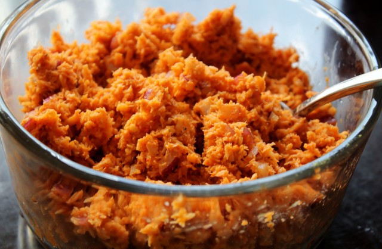
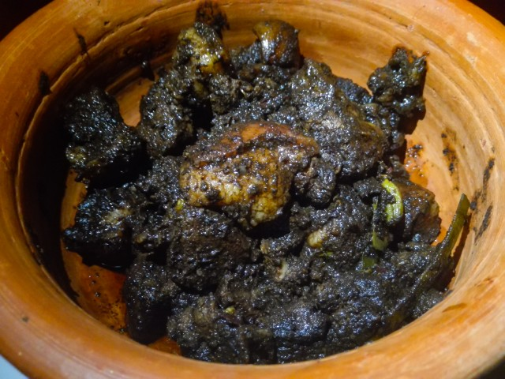

1) what is it called the food that made from rice noodles curled into flat spirals.
Rice
Kottu
Hoppers
2) This food made fromWheat, rice or kurakkan (Eleusine coracana, a strongly flavored brown millet)-meal is mixed with fresh grated coconut and a touch of oil and baked on a hot griddle in thin flat cakes.
Roti
Hoppers
Kottu
3) . this food is is a popular and frequently prepared food item among Sri Lankans, both Tamils living in Northern and Eastern parts of Sri lanka as well as Sinhalese living in the rest of the areas of the country.
Rice
Kottu
Roti
4) What’s the main difference between “katta sambol” and “lunu miris”?
Finely chopped vs roughly chopped unions
Additional of Maldive's fish
More unions
5) What constitutes “thuna paha”?
Roasted spices
Coconut based food
Five fruits that are used in curries
6) In Sri Lankan cooking what does “themperaadu” mean?
Sautee
Steam
Dry
7) What are foods made for preservation?
Rice
kavum
Lunudehi
8) which of the following is not an ingredient used to make pol sambol?
Ginger
Dried chilli
Lime
9) What gives black pork curry its distinctive colour?
Black pepper
Black Sesame
Salt
10) what are the two curries traditionally served at sri lankan funerals?
Polos and sadness
Plain rice with murunga gravy
Pumpkin curry and dried fish